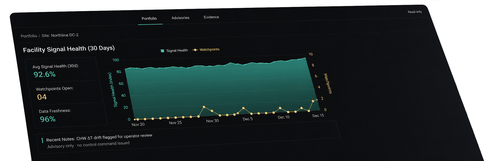
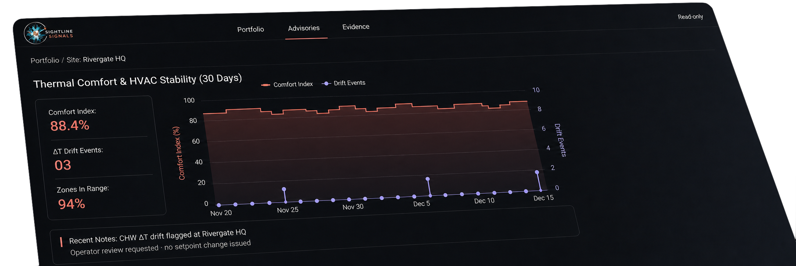
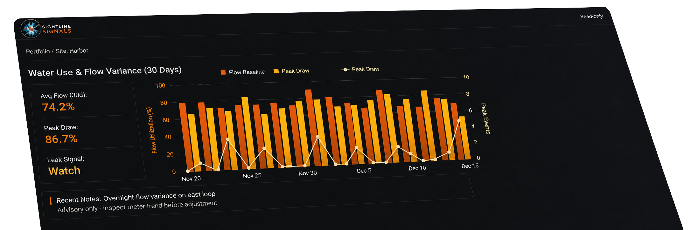
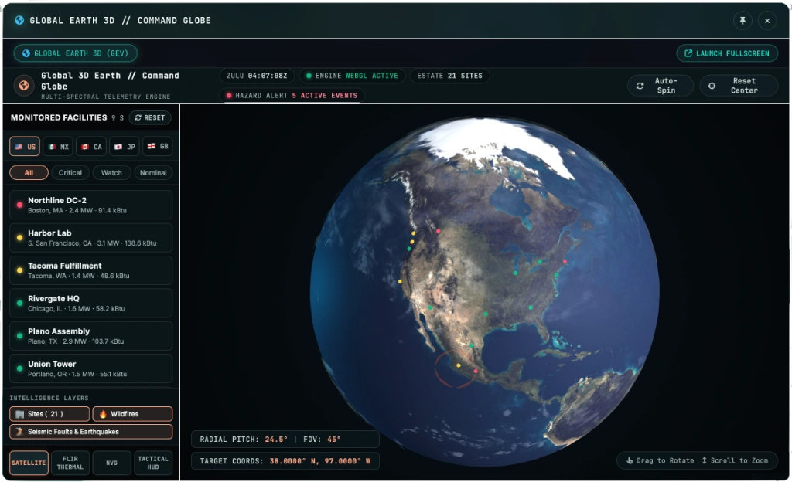
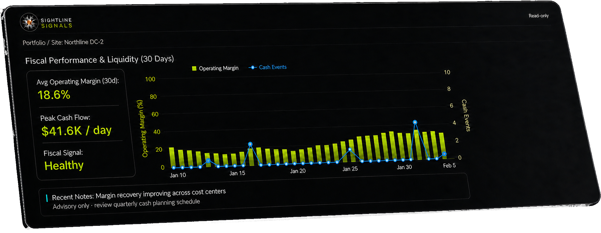
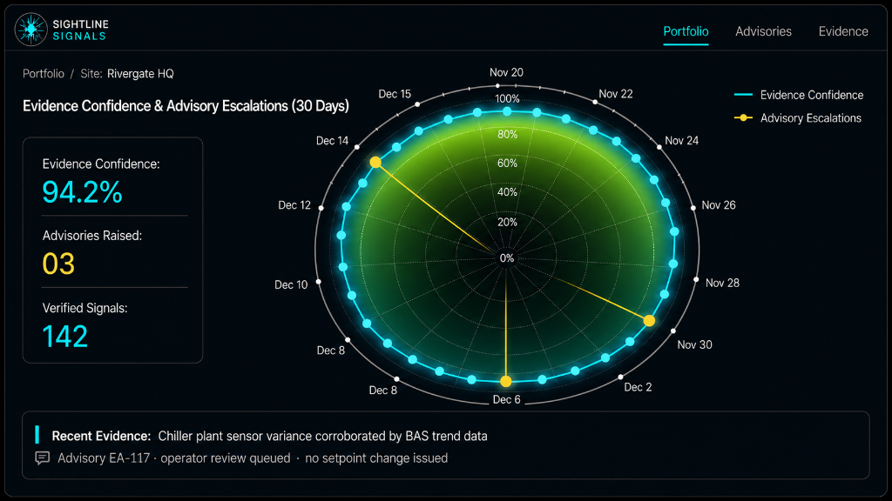
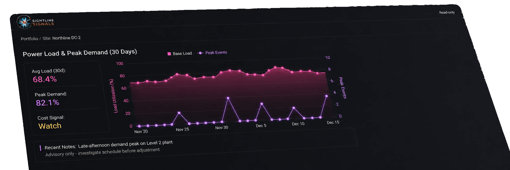
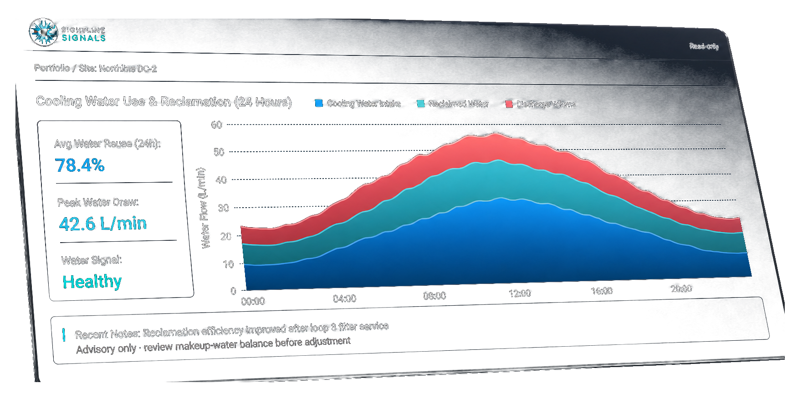

See the estate
Bring existing facility and infrastructure telemetry into one portfolio view.
source / visibleSightline Signals turns the data your existing systems already collect into ranked risk, fault context, performance insight, and a clearer next decision.

Portfolio health, open watchpoints, and freshness appear in the same operating picture.

Comfort can hold while CHW ΔT drift becomes visible before it turns into a work order.

Source freshness and evidence coverage stay visible alongside the finding.
Read the estate without replacing the control layer.
Reduce the scan surface for the next review.
Give operators and leaders the same context.
No automatic commands or hidden actuation path.
Most estates already produce more telemetry than a team can scan manually. Sightline carries context from source point to a responsible human handoff.
Bring existing facility and infrastructure telemetry into one portfolio view.
source / visibleAlign readings, freshness, and asset context so teams share the same vocabulary.
context / alignedSurface risk, faults, stale data, cost, comfort, and reliability patterns in review order.
finding / rankedGive the operator, vendor, or leader an advisory record with a clear next owner.
evidence / humanBefore a queue can be ranked, the estate has to be legible. Spatial Command keeps condition attached to place, so a portfolio question and a site question are asked in the same view.

Illustrative product preview. Site counts, positions, and condition states are sample data; provenance and freshness are confirmed against the source record during a walkthrough.
Operators need a queue. Leadership needs a portfolio decision surface. Technical teams need lineage and boundary conditions.
Ranked advisories connect the signal to the asset, the physical check, and the next responsible handoff.
Portfolio views connect performance, risk, efficiency, and capital attention without losing site context.

Keep source freshness, normalization, lineage, and advisory boundaries visible for the people who govern the data.
The chart stays intact; the surrounding layer explains what changed, why it matters, and what a human should review next.


A ranked signal should be explainable to the operator who reviews it, the vendor who receives it, and the leader who funds the next decision.

Sightline is designed to sit above the systems teams already operate, bringing condition, risk, freshness, and evidence into one shared decision surface.
The console carries six modules over one estate, one evidence chain, and one read-only boundary. Each opens the part of this page where that surface is shown.
Connector availability, retention, and read-only boundaries should be confirmed for each portfolio during onboarding. This product preview does not claim a specific protocol inventory.
Sightline observes, ranks, and explains. Your existing control systems remain in place, and your operators remain responsible for deciding what happens next.
Share the portfolio context, the recurring signal, or the decision your team wants to make more legible. We will start from the evidence.